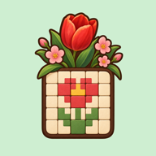

꽃피는 네모로직같은 꽃, 풀어 볼래요?
스도쿠처럼 숫자로 푸는 그림 퍼즐이에요.
숫자만큼 칸을 칠하면 우리 꽃이 피어요.
계산은 없어요 · 목숨도 기다리는 시간도 없어요
구글 플레이에서 받기 앱 스토어에서 받기받은 뒤 꽃밭에서 이 꽃을 찾아 풀어 보세요.
꽃피는 네모로직 고객 지원 · 우드번스튜디오

꽃피는 네모로직스도쿠처럼 숫자로 푸는 그림 퍼즐이에요.
숫자만큼 칸을 칠하면 우리 꽃이 피어요.
계산은 없어요 · 목숨도 기다리는 시간도 없어요
구글 플레이에서 받기 앱 스토어에서 받기받은 뒤 꽃밭에서 이 꽃을 찾아 풀어 보세요.
꽃피는 네모로직 고객 지원 · 우드번스튜디오